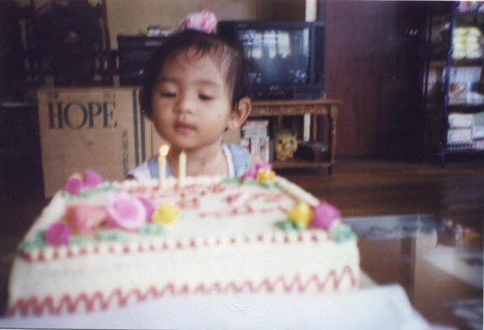
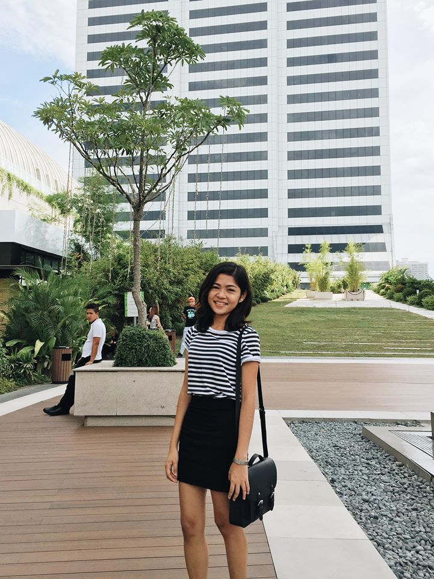

My Story
 I used to be very quiet and shy when I was a child. When my mom enrolled me to preschool, it changed my life. Pre-school helped me a lot to learn socializing with people. I spent most of my childhood playing indoors alone with my toys and making horror tunnels. My dad was not around until I turned five when he finally came home from working as an OFW in Saudi Arabia. My siter and I were so fortunate when our dad came home since he instantly became the playmate that we had long for. I was also close to my mom but we did not have a lot of time together when I was little since she was busy managing the family business. My sister and I used to fight a lot which sometimes would lead to minor cuts and injuries. We now laugh every time we remind each other of the violence that we did before.
 My high school life was definitely remarkable. I was in the Special Science Class of the school where I met some of the most amazing people of my life. My freshman year was my least favorite of all the years I spent in higschool. We were 43 in class where it was inevitable to witness fights and dramas caused by some of my classmates. People were very competitive that time and I had only few people in mind who could totally trust. After the freshman year ended, there were only 22 students left to continue to stay in our section. Basically, Sophomore year is where the all the fun began. As we all grew older, we became closer and united. Class drama was never gone but at least it was tolerable and quite fun than what we had during freshman year. I just love my friends and those memories of sleep overs and going to the beach.
My high school life was definitely remarkable. I was in the Special Science Class of the school where I met some of the most amazing people of my life. My freshman year was my least favorite of all the years I spent in higschool. We were 43 in class where it was inevitable to witness fights and dramas caused by some of my classmates. People were very competitive that time and I had only few people in mind who could totally trust. After the freshman year ended, there were only 22 students left to continue to stay in our section. Basically, Sophomore year is where the all the fun began. As we all grew older, we became closer and united. Class drama was never gone but at least it was tolerable and quite fun than what we had during freshman year. I just love my friends and those memories of sleep overs and going to the beach.
 Currently, I am in my fourth year in the Univeristy of the Philippines-Los Banos. So far, I can consider college as the best stage of my life. College is where I became independent. Here is where I realized the importance of making hard choices, as well as accepting and learning from my own failures. I also appreciate college since this this is where I was reached out by a friend who told me the Gospel. My life is now brigther than before because I am now living with my Lord and I now know my life's purpose.
 In the future, I will be a social entrepreneur who will build sustainable communities for the poor. I will also be a farmer who will feed my hometown with good food. Above all, I will be a person who will honor God through my work.
In the future, I will be a social entrepreneur who will build sustainable communities for the poor. I will also be a farmer who will feed my hometown with good food. Above all, I will be a person who will honor God through my work.